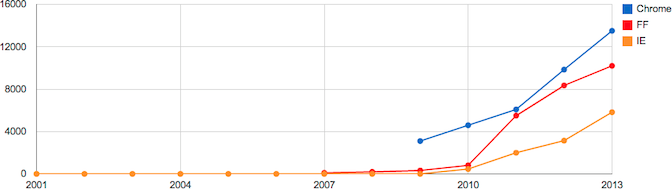
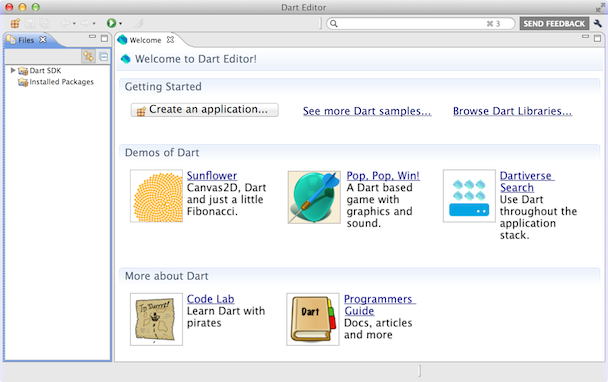
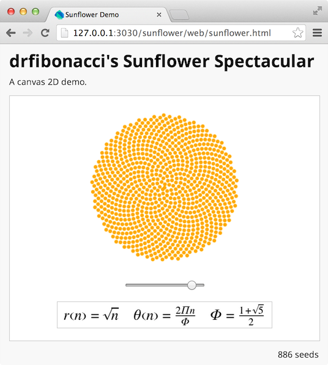
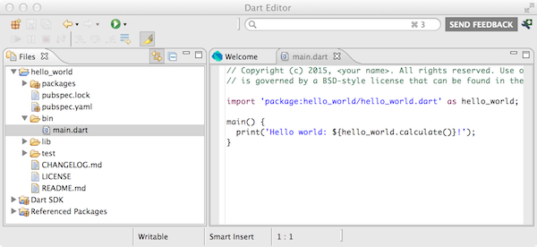

Quick Start
Welcome to Dart, an open-source, batteries-included developer platform for building structured HTML5 web apps. This chapter tells you why Google created Dart, what’s cool about Dart, and how to write and run your first Dart app.
Dart provides not only a new language, but libraries, an editor, a virtual machine (VM), a browser that can run Dart apps natively, and a compiler to JavaScript. Dart aims to be a more productive way to build the high-performance, modern apps that users demand.
Why Google created Dart
Google cares a lot about helping to make the web great. We write a lot of web apps, many of them quite sophisticated—think Gmail, Google Calendar, Google+, and more. We want web apps to load quickly, run smoothly, and present engaging and fun experiences to users. We want developers of all backgrounds to be able to build great experiences for the browser.
As an example of Google’s commitment to the web, consider the Google Chrome browser. Google created it to spur competition at a time when the web platform seemed to be stagnating. It worked. As the following figure shows, browser speed has increased immensely since Chrome’s introduction in 2008.

The number of new features in browsers has also increased, with APIs such as WebGL, FileSystem, Web workers, and WebSockets. Browsers now have automatic update capabilities, frequently delivering new features and fixes directly to the user. Mobile devices such as tablets and phones also have modern browsers with many HTML5 features.
Despite these improvements in the web platform, the developer experience hasn’t improved as much as we’d like. We believe it should be easier to build larger, more complex web apps. It’s taken far too long for productive tools to emerge, and they still don’t match the capabilities offered by other developer platforms. You shouldn’t have to be intimately familiar with web programming to start building great apps for the modern web. And even though JavaScript engines are getting faster, web apps still start up much too slowly.
We expect Dart to help in two main ways:
-
Better performance: As VM engineers, the designers of Dart know how to build a language for performance. A more structured language is easier to optimize, and a fresh VM enables improvements such as faster startup.
-
Better productivity: Support for libraries and packages helps you work with other developers and easily reuse code from other projects. Types can make APIs clearer and easier to use. Tools help you refactor, navigate, and debug code.
A quick look at the Dart language
It’s hard to talk about a language without seeing it. Here’s a peek at a small Dart program:
import 'dart:math';
class Point {
num x, y;
Point(this.x, this.y);
num distanceTo(Point other) {
var dx = x - other.x;
var dy = y - other.y;
return sqrt(dx * dx + dy * dy);
}
}
main() {
var p = new Point(2, 3);
var q = new Point(3, 4);
print('distance from p to q = ${p.distanceTo(q)}');
}
Of course, Dart’s main use case is building modern web apps. Programming the browser is easy:
import 'dart:html';
main() {
var button = new ButtonElement();
button
..id = 'confirm'
..text = 'Confirm'
..classes.add('important')
..onClick.listen((e) => window.alert('Confirmed!'));
querySelector('#registration').children.add(button);
}
You’ll learn about the Dart language and libraries in Chapters 2 and 3.
What’s cool about Dart
Dart may look familiar, but don’t let that fool you. Dart has lots of cool features to help give you a productive and fun experience building the next generation of awesome web apps.
Dart is easy to learn. A wide range of developers can learn Dart quickly. It’s an object-oriented language with classes, single inheritance, lexical scope, top-level functions, and a familiar syntax. Most developers are up and running with Dart in just a few hours.
Dart compiles to JavaScript. Dart has been designed from the start to compile to JavaScript, so that Dart apps can run across the entire modern web. Every feature considered for the language must somehow be translated to performant and logical JavaScript before it is added. Dart draws a line in the sand and doesn’t support older, legacy browsers.
Dart runs in the client and on the server. The Dart virtual machine (VM) can be integrated into a web browser, but it can also run standalone on the command line. With built-in library support for files, directories, sockets, and even web servers, you can use Dart for full end-to-end apps.
Dart comes with a lightweight editor. You can use Dart Editor to write, launch, and debug Dart apps. The editor can help you with code completion, detecting potential bugs, debugging both command-line and web apps, and even refactoring. Dart Editor isn’t required for writing Dart; it’s just a tool that can help you write better code faster.
Dart supports types, without requiring them. You can omit types when you want to move very quickly, aren’t sure what structure to take, or simply want to express something you can’t with the type system. You can add types as your program matures, the structure becomes more evident, and more developers join the project. Dart’s optional types are static type annotations that act as documentation, clearly expressing your intent. Using types means that fewer comments are required to document the code, and tools can give better warnings and error messages.
Dart scales from small scripts to large, complex apps. Web development is very much an iterative process. With the reload button acting as your compiler, building the seed of a web app is often a fun experience of writing a few functions just to experiment. As the idea grows, you can add more code and structure. Thanks to Dart’s support for top-level functions, optional types, classes, and libraries, your Dart programs can start small and grow over time. Tools such as Dart Editor help you refactor and navigate your code as it evolves.
Dart has a wide array of built-in libraries. The core library supports built-in types and other fundamental features such as collections, dates, and regular expressions. Web apps can use the HTML library—think DOM programming, but optimized for Dart. Command-line apps can use the I/O library to work with files, directories, sockets, and servers. Other libraries include URI, UTF, Crypto, Math, and Unit test.
Dart supports safe, simple concurrency with isolates. Traditional shared-memory threads are difficult to debug and can lead to deadlocks. Dart’s isolates, inspired by Erlang, provide an easier to understand model for running isolated, but concurrent, portions of your code. Spawning new isolates is cheap and fast, and no state is shared.
Dart supports code sharing. Traditional web programming workflows can’t integrate third-party libraries from arbitrary sources or frameworks. With the Dart package manager (pub) and language features such as libraries, you can easily discover, install, and integrate code from across the web and enterprise.
Dart is open source. Dart was born for the web, and it’s available under a BSD-style license. You can find the project’s issue tracker and source repository online. Maybe you’ll submit the next patch?
Up and running
Now that you know something about Dart, get ready to code! These instructions feature the open-source Dart Editor tool. When you download Dart, you not only get Dart Editor, but also tools such as the Dart-to-JavaScript compiler and a version of Chromium (nicknamed Dartium) that includes the Dart VM.
Step 1: Download and install the software
In this step, you’ll install Dart Editor and, if necessary, a Java
runtime environment. (To avoid having to modify the PATH environment
variable, you can install the JRE under your Dart installation
directory, in a subdirectory named jre.)
-
Unarchive the file you downloaded. The resulting directory, which we’ll call your Dart installation directory, contains the
DartEditorexecutable and several subdirectories. -
If you don’t already have a Java runtime, download and install it. Dart Editor requires Java version 6 or higher.
Step 2: Launch the editor
Go to your Dart installation directory, and double-click the
DartEditor executable .
.
You should see the Dart Editor application window appear, looking something like the following figure.

Step 3: Open and run a demo
The Dart Editor bundle comes with several demos and samples. In this step, you’ll open a web app and run it in Dartium.
-
Click the Welcome tab. Or choose Welcome Page from the Tools menu.
-
In the Welcome tab, click the image labeled Sunflower. Dart Editor creates a copy of the Sunflower app’s directory, and the Editor view displays the contents of web/sunflower.dart.
-
Click the Run button
 . Dart Editor launches
Dartium, which displays sunflower.html.
. Dart Editor launches
Dartium, which displays sunflower.html.
-
Move the slider to change the sunflower’s display, as shown in the following figure.

Step 4: Create and run an app
It’s easy to create a simple web or command-line app from scratch. This step walks you through creating and running a command-line app.
-
Click the New Project button
 (at the
upper left of Dart Editor). Alternatively, choose File > New
Project from the Dart Editor menu, or click the Create an
Application… button in the Welcome page. A dialog appears.
(at the
upper left of Dart Editor). Alternatively, choose File > New
Project from the Dart Editor menu, or click the Create an
Application… button in the Welcome page. A dialog appears. -
Type in a name for your application—for example,
hello_world. If you don’t like the default directory, type in a new location or browse to choose the location. -
Make sure that Console Application is selected. Then click Finish to create the initial files for the app.
A default Dart file appears in the Edit view, and its directory appears in the Files view. Your Dart Editor window should look something like the following screenshot.

-
Click the Run button
to run your new app.For command-line apps, the output of
print()appears at the bottom right, in a new tab next to the Problems tab.
What next?
Now that you know the basics, you can learn more about Dart Editor and help improve it.
Follow a code lab
Go to dartlang.org/codelabs to find the latest step-by-step instructions for writing an app. The first code lab, Try Dart, guides you through using Dart Editor to build and run a pirate name badge generator.
Read tutorials
The Dart Tutorials teach you how to build web applications using the Dart language, tools, and APIs.
Become a power user
Visit the Dart Editor homepage for help on using Dart Editor’s expanding feature set.
Send feedback
Click the SEND FEEDBACK link (at the upper right of the Dart Editor window) whenever you notice a problem or have an idea for improving Dart Editor. We’ll open a new issue for you, if appropriate, without disclosing your sensitive or personally identifiable information.